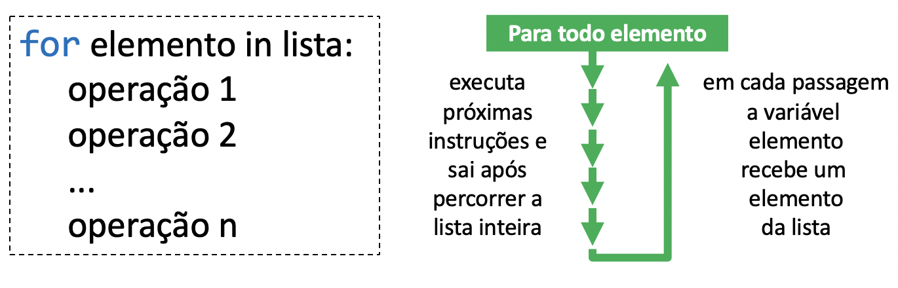

07. For
O objetivo de aprendizado deste handout é que, ao final da atividade, você seja capaz de utilizar o for para percorrer listas e intervalos (range) em seus programas em conjunto com as estruturas que vimos nas aulas anteriores (input, if, while, etc.). Vamos começar com um exemplo.
Percorrendo listas com while
Considere a função a seguir, que recebe uma lista de números como argumento:
def soma_elementos(lista):
soma = 0
i = 0
while i < len(lista):
n = lista[i]
soma += n
i += 1
return soma
O que ela faz? Ela inicializa uma variável soma com o valor zero e, para cada elemento n da lista, adiciona o valor guardado em n na variável soma e vai para o próximo elemento. Depois disso, devolve o resultado da soma de todos os elementos. Depois de fazer muitos exercícios você pode ter percebido que em muitos casos temos uma estrutura muito parecida com essa quando estamos percorrendo uma lista:
# Faz algumas inicializações
i = 0
while i < len(lista):
elemento = lista[i]
# Faz alguma coisa com o elemento
i += 1
Com essa estrutura podemos, por exemplo, imprimir ou somar todos os elementos de uma lista. Nesses casos, a lógica é sempre parecida: executa alguma ação para cada elemento da lista. Na verdade esse tipo de procedimento é tão comum que existe uma maneira mais sucinta de fazer isso em Python: a repetição for.
A repetição for
O for percorre automaticamente todos os elementos em uma lista, caracteres em uma string, e outras estruturas que veremos no futuro:
for">
Ele se comporta de forma semelhante ao while se considerarmos que ele executa o bloco de código múltiplas vezes, mas uma diferença importante é que o for não possui condição. Ele percorre todos os elementos e depois termina. Podemos ler o código abaixo:

como:

Assim, podemos reescrever o código a seguir:
utilizando o for:

Cada vez que o Python for executar o bloco dentro do for a variável e será automaticamente atualizada com o valor do próximo elemento da lista.
O range
Outra estratégia bastante comum em programação é o uso de contadores para percorrer números em um intervalo. Executamos uma determinada operação para o valor 0, depois para o valor 1, depois para o valor 2, e assim por diante. O Python possui uma função chamada range que gera essa sequência de números naturais. Existem 3 maneiras de utilizar o range:

rangecom um argumento: os números gerados vão desde o zero até o antes do argumento. Exemplo:range(3)gera a sequência0,1,2(note que o3não pertence à sequência gerada);rangecom dois argumentos: os números gerados vão desde o primeiro argument até antes do segundo argumento. Exemplo:range(13, 17)gera a sequência13,14,15,16(note que o13pertence à sequência, mas o17, não);rangecom três argumentos: os números gerados vão desde o primeiro argument até antes do segundo argumento e o terceiro argumento é o salto de um elemento gerado para o próximo. Exemplo:range(2, 13, 3)gera a sequência2,5,8,11(note que o2pertence à sequência, mas o próximo elemento da sequência, o14, não).
EXERCÍCIO 1